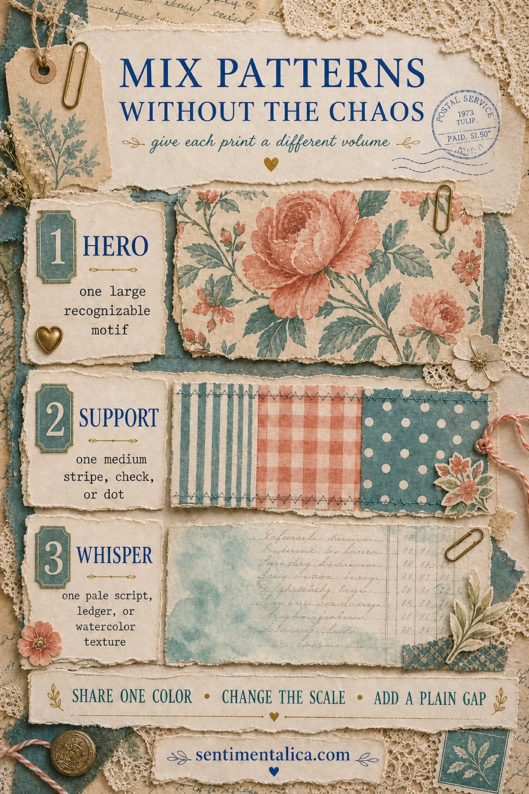
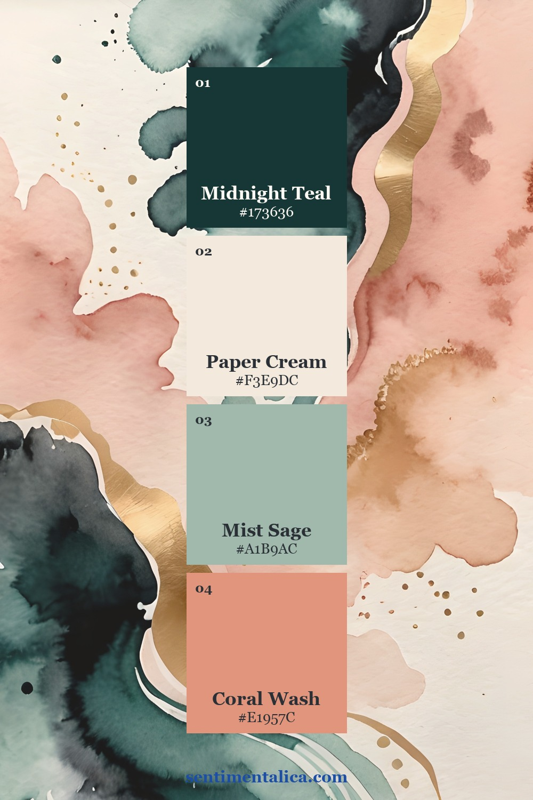
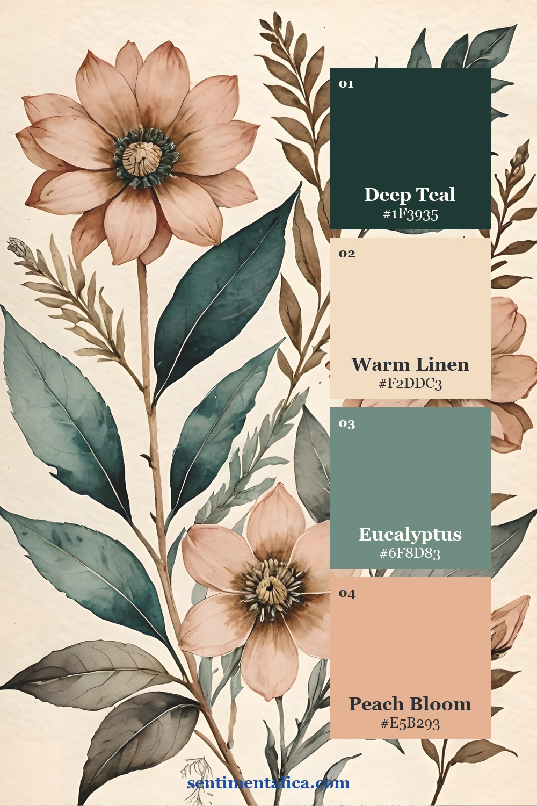
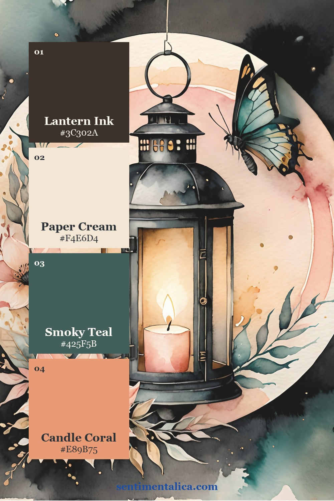
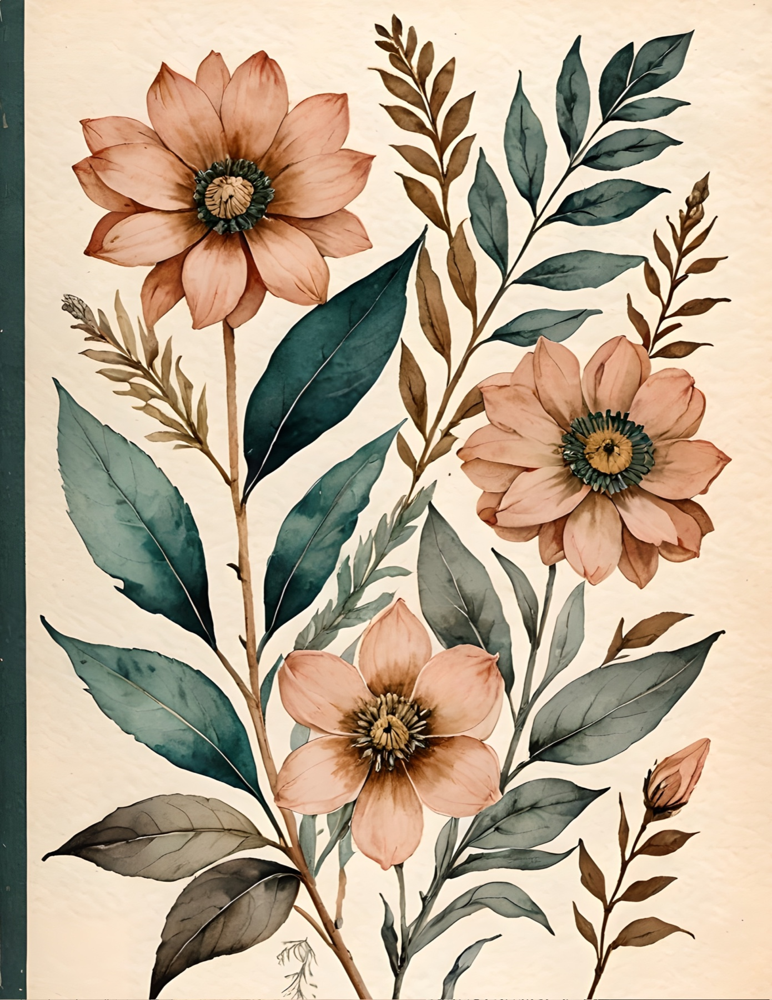

Patterned papers often look beautiful one at a time and strangely noisy when they meet on the same spread. The solution is not to avoid pattern. It is to stop asking every pattern to speak at the same volume. Give one print the lead, let another support it, and make the last one quiet enough to behave like texture.

Choose one hero pattern
Your hero is the pattern the eye should notice first: a large flower, a bird, an ornate label, a map, or another recognizable motif. Give it the largest area or the strongest contrast. One hero is usually enough for a spread. If two large motifs compete, crop one into a much smaller detail or save it for the next page.
Add a support pattern at a smaller scale
The support pattern should be simpler and visibly smaller than the hero. Think of a narrow stripe, tiny check, scattered dot, postage edge, or modest geometric repeat. Use it as a tab, frame, torn strip, pocket edge, or corner rather than a second full-page background. Its job is to carry the eye across the composition without becoming a new destination.
Let the whisper sit behind everything
A whisper pattern is low-contrast and easy to write over: pale script, ledger lines, faded book text, a watercolor stain, or a worn paper texture. It can cover more space because it does not demand much attention. If the hero is a song and the support is its rhythm, the whisper is the room around them.
Repeat one color, not the whole palette
Different patterns can belong together when they share one repeated color. Pull the teal from a floral into a thin geometric strip, or repeat a small coral accent in a label. They do not need to match in every shade. One clear color echo is often enough to make the combination feel deliberate.
Put a plain gap between loud prints
When two patterns still argue, separate them with a strip of cream, kraft, vellum, or another quiet paper. Even a narrow torn edge creates a visual pause. This is especially useful around journaling: the plain gap protects your words and prevents decoration from swallowing the reason you made the page.
Three palettes that hold different motifs together
These examples show how the same basic color family can move through abstract washes, botanicals, and illustrated ephemera. Notice that the motifs change more than the colors do.



Try the method without using your favourite paper
Choose one floral from the 100 free floral pictures as the hero. Pair it with a narrow envelope-security pattern, stripe, or tiny check, then place both over a pale book page or ledger sheet. Add one plain cream gap before you glue anything down. It is a low-pressure way to see the three roles working together.
See the pattern roles in real printable pages
In these Sugar Scrawl pages, compass marks, botanical shapes, lantern illustration, watercolor texture, and tiny decorative repeats live in one visual world because teal, coral, cream, ink, and antique gold keep returning. You can use a full motif as the hero, crop a smaller repeat for support, and borrow a quiet painted area as the whisper.

Before you finish, look at the spread from a few steps away. You should be able to name the hero immediately. If you cannot, make one pattern larger, make another smaller, or cover part of the busiest area with a plain scrap. Pattern mixing feels calm when the roles are unequal.
For more practical composition ideas, browse the Sentimentalica journal archive.